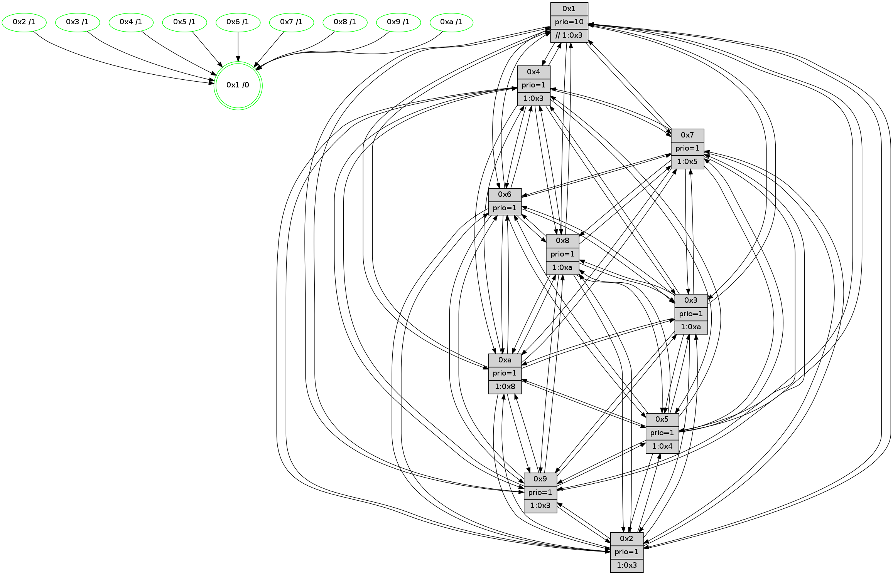

>> << IDX [start] -100 -25 -5 +0 +5 +25 +100 [1100.00202107]
 Previous packets
----------------------------------------------------------------------
1095.142519 beacon01(faad) #0 coord=01,02,03,04,05,06,07,0a,09,08 cycle=688.0ms assoc
-- color-indic=1 64 bc aa
1095.152500 beacon02(faad) #0 coord=01,02,03,04,05,06,07,0a,09,08 cycle=688.0ms assoc 64 2f 9b
1095.162502 beacon03(faad) #0 coord=01,02,03,04,05,06,07,0a,09,08 cycle=688.0ms assoc 64 55 d6
1095.172502 beacon04(faad) #0 coord=01,02,03,04,05,06,07,0a,09,08 cycle=688.0ms assoc 64 22 3c
1095.182503 beacon05(faad) #0 coord=01,02,03,04,05,06,07,0a,09,08 cycle=688.0ms assoc 64 58 71
1095.192503 beacon06(faad) #0 coord=01,02,03,04,05,06,07,0a,09,08 cycle=688.0ms assoc 64 d6 a6
1095.202503 beacon07(faad) #0 coord=01,02,03,04,05,06,07,0a,09,08 cycle=688.0ms assoc 64 ac eb
1095.212506 beacon0a(faad) #0 coord=01,02,03,04,05,06,07,0a,09,08 cycle=688.0ms assoc 64 dd e0
1095.222507 beacon09(faad) #0 coord=01,02,03,04,05,06,07,0a,09,08 cycle=688.0ms assoc 64 53 37
1095.232508 beacon08(faad) #0 coord=01,02,03,04,05,06,07,0a,09,08 cycle=688.0ms assoc 64 29 7a
1095.243722 [Hello(8): seq=643 sym=5,2,3,4,9,6,7,10,1 sysInfo=hasWarning stat=5:2,14,14,0/2:12,9,10,9/3:9,15,13,14/4:9,5,4,10/9:6,12,0,3/6:2,11,12,13/7:8,1,14,3/10:11,6,2,3/1:7,1,2,0]
1095.248028 [Hello(10): seq=632 sym=6,2,3,8,7,5,9,4,1 sysInfo=hasWarning stat=6:6,13,13,6/2:5,2,1,9/3:10,5,2,10/8:2,8,6,0/7:8,15,13,5/5:15,5,10,14/9:3,5,14,2/4:12,5,14,9/1:10,13,12,1]
1095.250767 [Color(5) seq=306 @0:0 prio=1 >1.@2,1.@4,1.@7,1.@8]
1095.254309 [Color(2) seq=291 @0:0 prio=1 >1.@3,1.@4,1.@5,1.@6]
1095.256356 [Hello(7): seq=699 sym=2,3,5,6,4,8,9,10,1 sysInfo=hasWarning stat=2:2,10,1,0/3:6,9,15,14/5:10,11,15,1/6:0,12,15,9/4:2,5,3,1/8:9,10,9,1/9:3,10,1,1/10:8,1,2,4/1:7,8,4,0]
1095.259178 [Color(7) seq=258 @0:0 prio=1 >1.@3,1.@5,1.@6,1.@8]
1095.264437 [Hello(4): seq=699 sym=5,7,6,2,3,9,8,10,1 sysInfo= stat=5:6,8,9,14/7:2,15,9,9/6:9,7,10,12/2:10,2,2,13/3:8,3,9,10/9:11,7,14,10/8:13,5,13,4/10:9,0,2,12/1:15,15,5,1]
1095.267591 [Color(4) seq=279 @0:0 prio=1 >1.@3,1.@5,1.@6,1.@7]
1095.269266 [Color(1) seq=380 @0:0 prio=10 >>1.@3,1.@4,1.@5]
1095.271887 [Hello(9): seq=643 sym=2,5,3,4,7,6,8,10,1 sysInfo=hasWarning stat=2:1,2,7,7/5:7,6,7,5/3:3,6,11,14/4:0,2,0,1/7:3,6,1,0/6:0,2,2,11/8:8,0,11,3/10:11,5,13,3/1:6,14,3,1]
1095.275993 [Color(9) seq=305 @0:0 prio=1 >1.@3,1.@5,1.@6,1.@7]
----------------------------------------------------------------------
1095.930650 beacon01(faad) #0 coord=01,02,03,04,05,06,07,0a,09,08 cycle=688.0ms assoc
-- color-indic=1 64 28 73
1095.940631 beacon02(faad) #0 coord=01,02,03,04,05,06,07,0a,09,08 cycle=688.0ms assoc 64 bb 42
1095.950631 beacon03(faad) #0 coord=01,02,03,04,05,06,07,0a,09,08 cycle=688.0ms assoc 64 c1 0f
1095.960631 beacon04(faad) #0 coord=01,02,03,04,05,06,07,0a,09,08 cycle=688.0ms assoc 64 b6 e5
1095.970633 beacon05(faad) #0 coord=01,02,03,04,05,06,07,0a,09,08 cycle=688.0ms assoc 64 cc a8
1095.980633 beacon06(faad) #0 coord=01,02,03,04,05,06,07,0a,09,08 cycle=688.0ms assoc 64 42 7f
1095.990633 beacon07(faad) #0 coord=01,02,03,04,05,06,07,0a,09,08 cycle=688.0ms assoc 64 38 32
1096.000637 beacon0a(faad) #0 coord=01,02,03,04,05,06,07,0a,09,08 cycle=688.0ms assoc 64 49 39
1096.010636 beacon09(faad) #0 coord=01,02,03,04,05,06,07,0a,09,08 cycle=688.0ms assoc 64 c7 ee
1096.020638 beacon08(faad) #0 coord=01,02,03,04,05,06,07,0a,09,08 cycle=688.0ms assoc 64 bd a3
1096.031875 [Hello(2): seq=696 sym=4,5,7,6,3,9,8,10,1 sysInfo=hasWarning stat=4:15,3,0,9/5:10,15,5,0/7:3,5,14,12/6:3,2,7,11/3:13,0,4,7/9:7,0,6,6/8:4,5,1,9/10:14,1,10,10/1:14,14,7,0]
1096.035286 [Color(8) seq=322 @0:0 prio=1 >1.@a]
1096.036792 [Hello(5): seq=700 sym=7,6,4,3,1,9,8,10,2 sysInfo=hasWarning stat=7:5,6,1,12/6:7,12,2,2/4:5,3,11,11/3:4,9,7,12/1:9,9,7,1/9:4,8,10,8/8:0,2,7,0/10:5,13,7,7/2:6,11,10,4]
1096.040545 [Color(10) seq=289 @0:0 prio=1 >1.@8]
1096.043060 [Hello(6): seq=700 sym=2,3,5,4,7,9,8,10,1 sysInfo=hasWarning stat=2:9,1,13,6/3:0,0,9,10/5:10,14,11,0/4:1,7,4,4/7:12,5,13,10/9:3,5,14,7/8:1,11,7,3/10:6,3,1,12/1:3,12,3,1]
1096.047177 [Color(6) seq=332 @0:0 prio=1]
1096.050688 [Hello(3): seq=700 sym=1,7,6,2,4,8,9,10,5 sysInfo=hasWarning stat=1:8,8,15,0/7:0,7,6,10/6:5,14,4,5/2:5,2,9,0/4:1,14,10,10/8:13,2,3,2/9:12,13,11,13/10:1,6,8,3/5:13,15,0,14]
1096.055110 [Color(3) seq=329 @0:0 prio=1 >1.@a]
1096.057472 [Hello(1): seq=609 sym=4,2,9,5,10,3,8,6,7 sysInfo=coloring-mode-on,ColoringModeRequestCalled stat=4:15,4,13,3/2:13,2,11,0/9:8,12,10,7/5:15,3,4,7/10:12,3,14,5/3:12,6,2,5/8:11,3,11,1/6:11,10,13,13/7:12,13,12,13]
----------------------------------------------------------------------
1096.718779 beacon01(faad) #0 coord=01,02,03,04,05,06,07,0a,09,08 cycle=688.0ms assoc
-- color-indic=1 64 94 76
1096.728761 beacon02(faad) #0 coord=01,02,03,04,05,06,07,0a,09,08 cycle=688.0ms assoc 64 07 47
1096.738763 beacon03(faad) #0 coord=01,02,03,04,05,06,07,0a,09,08 cycle=688.0ms assoc 64 7d 0a
1096.748763 beacon04(faad) #0 coord=01,02,03,04,05,06,07,0a,09,08 cycle=688.0ms assoc 64 0a e0
1096.758763 beacon05(faad) #0 coord=01,02,03,04,05,06,07,0a,09,08 cycle=688.0ms assoc 64 70 ad
1096.768763 beacon06(faad) #0 coord=01,02,03,04,05,06,07,0a,09,08 cycle=688.0ms assoc 64 fe 7a
1096.778763 beacon07(faad) #0 coord=01,02,03,04,05,06,07,0a,09,08 cycle=688.0ms assoc 64 84 37
1096.788769 beacon0a(faad) #0 coord=01,02,03,04,05,06,07,0a,09,08 cycle=688.0ms assoc 64 f5 3c
1096.798766 beacon09(faad) #0 coord=01,02,03,04,05,06,07,0a,09,08 cycle=688.0ms assoc 64 7b eb
1096.808770 beacon08(faad) #0 coord=01,02,03,04,05,06,07,0a,09,08 cycle=688.0ms assoc 64 01 a6
1096.819988 [Hello(10): seq=633 sym=6,2,3,8,7,5,9,4,1 sysInfo=hasWarning stat=6:7,14,13,6/2:6,3,1,9/3:11,6,2,10/8:2,8,6,0/7:9,0,13,5/5:15,6,10,14/9:4,6,14,2/4:13,6,14,9/1:11,14,12,1]
1096.823827 [Hello(4): seq=700 sym=5,7,6,2,3,9,8,10,1 sysInfo= stat=5:7,8,9,14/7:2,15,9,9/6:10,8,10,12/2:11,2,2,13/3:9,4,9,10/9:12,8,14,10/8:14,6,13,4/10:9,1,2,12/1:0,0,5,1]
1096.829079 [Hello(7): seq=700 sym=2,3,5,6,4,8,9,10,1 sysInfo=hasWarning stat=2:3,10,1,0/3:7,10,15,14/5:11,11,15,1/6:1,13,15,9/4:3,6,3,1/8:10,11,9,1/9:4,11,1,1/10:8,2,2,4/1:8,9,4,0]
1096.832031 [Color(2) seq=292 @0:0 prio=1 >1.@3,1.@4,1.@5,1.@6]
1096.834288 [Hello(9): seq=644 sym=2,5,3,4,7,6,8,10,1 sysInfo=hasWarning stat=2:2,2,7,7/5:8,6,7,5/3:4,7,11,14/4:0,2,0,1/7:3,6,1,0/6:1,3,2,11/8:9,1,11,3/10:11,6,13,3/1:7,14,3,1]
1096.837730 [Color(9) seq=306 @0:0 prio=1 >1.@3,1.@5,1.@6,1.@7]
1096.842165 [STC(1) #0.163 tree-change,inconsistent-stability,stable,to-color d=0]
1096.843992 [Color(4) seq=280 @0:0 prio=1 >1.@3,1.@5,1.@6,1.@7]
1096.846255 [Color(7) seq=259 @0:0 prio=1 >1.@3,1.@5,1.@6,1.@8]
1096.851739 [Color(1) seq=381 @0:0 prio=10 >>1.@3,1.@4,1.@5]
----------------------------------------------------------------------
1097.506909 beacon01(faad) #0 coord=01,02,03,04,05,06,07,0a,09,08 cycle=688.0ms assoc
-- color-indic=1 64 50 78
1097.516891 beacon02(faad) #0 coord=01,02,03,04,05,06,07,0a,09,08 cycle=688.0ms assoc 64 c3 49
1097.526891 beacon03(faad) #0 coord=01,02,03,04,05,06,07,0a,09,08 cycle=688.0ms assoc 64 b9 04
1097.536891 beacon04(faad) #0 coord=01,02,03,04,05,06,07,0a,09,08 cycle=688.0ms assoc 64 ce ee
1097.546892 beacon05(faad) #0 coord=01,02,03,04,05,06,07,0a,09,08 cycle=688.0ms assoc 64 b4 a3
1097.556892 beacon06(faad) #0 coord=01,02,03,04,05,06,07,0a,09,08 cycle=688.0ms assoc 64 3a 74
1097.566893 beacon07(faad) #0 coord=01,02,03,04,05,06,07,0a,09,08 cycle=688.0ms assoc 64 40 39
1097.576897 beacon0a(faad) #0 coord=01,02,03,04,05,06,07,0a,09,08 cycle=688.0ms assoc 64 31 32
1097.586899 beacon09(faad) #0 coord=01,02,03,04,05,06,07,0a,09,08 cycle=688.0ms assoc 64 bf e5
1097.596899 beacon08(faad) #0 coord=01,02,03,04,05,06,07,0a,09,08 cycle=688.0ms assoc 64 c5 a8
1097.608168 [Hello(1): seq=610 sym=4,2,9,5,10,3,8,6,7 sysInfo=coloring-mode-on,ColoringModeRequestCalled stat=4:15,4,13,3/2:13,2,11,0/9:8,12,10,7/5:15,3,4,7/10:13,3,14,5/3:12,6,2,5/8:11,3,11,1/6:11,10,13,13/7:12,13,12,13]
1097.612174 [STC(8)->1 #0.163 tree-change,inconsistent-stability,stable,to-color d=1]
1097.614268 [Hello(2): seq=697 sym=4,5,7,6,3,9,8,10,1 sysInfo=hasWarning stat=4:15,4,0,9/5:11,15,5,0/7:3,6,14,12/6:4,3,7,11/3:14,1,4,7/9:8,1,6,6/8:4,6,1,9/10:15,2,10,10/1:15,15,8,0]
1097.617876 [STC(9)->1 #0.163 tree-change,inconsistent-stability,stable,to-color d=1]
1097.619775 [STC(2)->1 #0.163 tree-change,inconsistent-stability,stable,to-color d=1]
1097.622401 [Color(8) seq=323 @0:0 prio=1 >1.@a]
1097.624266 [STC(10)->1 #0.163 tree-change,inconsistent-stability,stable,to-color d=1]
1097.626126 [Hello(6): seq=701 sym=2,3,5,4,7,9,8,10,1 sysInfo=hasWarning stat=2:10,2,13,6/3:1,1,9,10/5:10,14,11,0/4:2,8,4,4/7:13,6,13,10/9:4,6,14,7/8:2,12,7,3/10:7,3,1,12/1:4,13,4,1]
1097.630860 [STC(6)->1 #0.163 tree-change,inconsistent-stability,stable,to-color d=1]
1097.632910 PARSE ERROR************************
Traceback (most recent call last):
File "PacketAnalysis.py", line 167, in showOperaPacket
structPacket = OperaPacketParse.parsePacket(rawPacket)
File "../../pkg-python/HipSens/Core/OperaPacketParse.py", line 461, in parsePacket
return parseHelloMessage(data)
File "../../pkg-python/HipSens/Core/OperaPacketParse.py", line 125, in parseHelloMessage
struct.unpack("!H",linkList[:2])[0])
error: unpack requires a string argument of length 2
48 34 05 00 02 bd 00 02 02 12 07 00 06 00 04 00 03 00 01 00 09 00 08 00 0a 00 02 00 53 04 00 02 00 00 4c 12 c1 76 22 d8 bb 45 c7 a5 18 aa 8a 95 07 20 77 e6 4a c6 4d a6
1097.636073 [Color(10) seq=290 @0:0 prio=1 >1.@8]
1097.637797 [STC(5)->1 #0.163 tree-change,inconsistent-stability,stable,to-color d=1]
1097.639036 [Color(6) seq=333 @0:0 prio=1]
1097.646549 [Hello(3): seq=701 sym=1,7,6,2,4,8,9,10,5 sysInfo=hasWarning stat=1:9,9,0,0/7:1,8,6,10/6:5,14,4,5/2:6,3,9,0/4:2,15,10,10/8:14,3,3,2/9:13,14,11,13/10:2,6,8,3/5:13,15,0,14]
1097.651595 [STC(3)->1 #0.163 tree-change,inconsistent-stability,stable,to-color d=1]
1097.653890 [Color(3) seq=330 @0:0 prio=1 >1.@a]
----------------------------------------------------------------------
1098.295045 beacon01(faad) #0 coord=01,02,03,04,05,06,07,0a,09,08 cycle=688.0ms assoc
-- color-indic=1 64 ec 7d
1098.305028 beacon02(faad) #0 coord=01,02,03,04,05,06,07,0a,09,08 cycle=688.0ms assoc 64 7f 4c
1098.315027 beacon03(faad) #0 coord=01,02,03,04,05,06,07,0a,09,08 cycle=688.0ms assoc 64 05 01
1098.325029 beacon04(faad) #0 coord=01,02,03,04,05,06,07,0a,09,08 cycle=688.0ms assoc 64 72 eb
1098.335030 beacon05(faad) #0 coord=01,02,03,04,05,06,07,0a,09,08 cycle=688.0ms assoc 64 08 a6
1098.345029 beacon06(faad) #0 coord=01,02,03,04,05,06,07,0a,09,08 cycle=688.0ms assoc 64 86 71
1098.355028 beacon07(faad) #0 coord=01,02,03,04,05,06,07,0a,09,08 cycle=688.0ms assoc 64 fc 3c
1098.365034 beacon0a(faad) #0 coord=01,02,03,04,05,06,07,0a,09,08 cycle=688.0ms assoc 64 8d 37
1098.375033 beacon09(faad) #0 coord=01,02,03,04,05,06,07,0a,09,08 cycle=688.0ms assoc 64 03 e0
1098.385033 beacon08(faad) #0 coord=01,02,03,04,05,06,07,0a,09,08 cycle=688.0ms assoc 64 79 ad
1098.396865 [Hello(8): seq=645 sym=5,2,3,4,9,6,7,10,1 sysInfo=hasWarning stat=5:4,15,15,0/2:13,11,10,9/3:11,1,14,14/4:10,7,4,10/9:8,14,0,3/6:4,13,13,13/7:10,3,14,3/10:12,8,3,3/1:9,3,3,0]
1098.399583 [Color(5) seq=308 @0:0 prio=1 >1.@4,1.@7,1.@8,1.@9]
1098.402096 [Hello(7): seq=701 sym=2,3,5,6,4,8,9,10,1 asym= sysInfo=hasWarning stat=2:4,10,2,0/3:8,11,0,14/5:12,11,0,1/6:2,14,0,9/4:3,6,3,1/8:10,12,10,1/9:4,11,2,1/10:9,3,3,4/1:9,10,4,0]
1098.406857 [Color(7) seq=260 @0:0 prio=1 >1.@3,1.@5,1.@6,1.@8]
1098.411955 [Hello(4): seq=701 sym=5,7,6,2,3,9,8,10,1 sysInfo= stat=5:8,8,10,14/7:2,0,9,9/6:11,9,11,12/2:12,2,3,13/3:10,5,10,10/9:12,8,15,10/8:14,7,14,4/10:10,2,3,12/1:1,1,5,1]
1098.414796 [Color(4) seq=281 @0:0 prio=1 >1.@3,1.@5,1.@6,1.@7]
1098.417083 [Hello(9): seq=645 sym=2,5,3,4,7,6,8,10,1 sysInfo=hasWarning stat=2:2,2,8,7/5:9,6,8,5/3:5,8,12,14/4:0,3,0,1/7:3,7,1,0/6:2,4,3,11/8:9,2,11,3/10:12,7,14,3/1:7,15,4,1]
1098.421113 [Hello(10): seq=634 sym=6,2,3,8,7,5,9,4,1 sysInfo=hasWarning stat=6:7,15,13,6/2:6,4,1,9/3:12,7,3,10/8:3,8,6,0/7:10,1,13,5/5:15,6,11,14/9:5,7,14,2/4:14,7,14,9/1:12,15,13,1]
1098.423563 [Color(9) seq=307 @0:0 prio=1 >1.@3,1.@5,1.@6,1.@7]
1098.426801 [Color(1) seq=382 @0:0 prio=10 >>1.@3,1.@4,1.@5]
1098.428344 [Color(2) seq=293 @0:0 prio=1 >1.@3,1.@4,1.@5,1.@6]
----------------------------------------------------------------------
1099.083174 beacon01(faad) #0 coord=01,02,03,04,05,06,07,0a,09,08 cycle=688.0ms assoc
-- color-indic=1 64 d8 65
1099.093156 beacon02(faad) #0 coord=01,02,03,04,05,06,07,0a,09,08 cycle=688.0ms assoc 64 4b 54
1099.103157 beacon03(faad) #0 coord=01,02,03,04,05,06,07,0a,09,08 cycle=688.0ms assoc 64 31 19
1099.113157 beacon04(faad) #0 coord=01,02,03,04,05,06,07,0a,09,08 cycle=688.0ms assoc 64 46 f3
1099.123156 beacon05(faad) #0 coord=01,02,03,04,05,06,07,0a,09,08 cycle=688.0ms assoc 64 3c be
1099.133157 beacon06(faad) #0 coord=01,02,03,04,05,06,07,0a,09,08 cycle=688.0ms assoc 64 b2 69
1099.143158 beacon07(faad) #0 coord=01,02,03,04,05,06,07,0a,09,08 cycle=688.0ms assoc 64 c8 24
1099.153163 beacon0a(faad) #0 coord=01,02,03,04,05,06,07,0a,09,08 cycle=688.0ms assoc 64 b9 2f
1099.163162 beacon09(faad) #0 coord=01,02,03,04,05,06,07,0a,09,08 cycle=688.0ms assoc 64 37 f8
1099.173163 beacon08(faad) #0 coord=01,02,03,04,05,06,07,0a,09,08 cycle=688.0ms assoc 64 4d b5
1099.185317 [Hello(2): seq=698 sym=4,5,7,6,3,9,8,10,1 sysInfo=hasWarning stat=4:15,4,0,9/5:12,15,6,0/7:3,6,14,12/6:5,4,8,11/3:15,2,5,7/9:8,1,6,6/8:5,7,1,9/10:15,3,11,10/1:15,15,8,0]
1099.188045 [Color(8) seq=324 @0:0 prio=1 >1.@a]
1099.194824 [Color(6) seq=334 @0:0 prio=1]
1099.196844 [Hello(1): seq=611 sym=4,2,9,5,10,3,8,6,7 sysInfo=coloring-mode-on,ColoringModeRequestCalled stat=4:15,4,13,3/2:14,3,12,0/9:8,12,11,7/5:0,3,5,7/10:13,4,15,5/3:13,7,3,5/8:12,4,12,1/6:12,11,14,13/7:12,13,12,13]
1099.201238 [Color(10) seq=291 @0:0 prio=1 >1.@8]
1099.207087 [Hello(3): seq=702 sym=1,7,6,2,4,8,9,10,5 sysInfo=hasWarning stat=1:10,10,0,0/7:2,9,6,10/6:5,14,4,5/2:6,4,9,0/4:3,0,10,10/8:15,3,3,2/9:14,15,11,13/10:3,6,8,3/5:13,0,0,14]
1099.211524 [Color(3) seq=331 @0:0 prio=1 >1.@a]
----------------------------------------------------------------------
1099.871305 beacon01(faad) #0 coord=01,02,03,04,05,06,07,0a,09,08 cycle=688.0ms assoc
-- color-indic=1 64 64 60
1099.881287 beacon02(faad) #0 coord=01,02,03,04,05,06,07,0a,09,08 cycle=688.0ms assoc 64 f7 51
1099.891287 beacon03(faad) #0 coord=01,02,03,04,05,06,07,0a,09,08 cycle=688.0ms assoc 64 8d 1c
1099.901289 beacon04(faad) #0 coord=01,02,03,04,05,06,07,0a,09,08 cycle=688.0ms assoc 64 fa f6
1099.911288 beacon05(faad) #0 coord=01,02,03,04,05,06,07,0a,09,08 cycle=688.0ms assoc 64 80 bb
1099.921288 beacon06(faad) #0 coord=01,02,03,04,05,06,07,0a,09,08 cycle=688.0ms assoc 64 0e 6c
1099.931290 beacon07(faad) #0 coord=01,02,03,04,05,06,07,0a,09,08 cycle=688.0ms assoc 64 74 21
1099.941291 beacon0a(faad) #0 coord=01,02,03,04,05,06,07,0a,09,08 cycle=688.0ms assoc 64 05 2a
1099.951292 beacon09(faad) #0 coord=01,02,03,04,05,06,07,0a,09,08 cycle=688.0ms assoc 64 8b fd
1099.961294 beacon08(faad) #0 coord=01,02,03,04,05,06,07,0a,09,08 cycle=688.0ms assoc 64 f1 b0
1099.973808 [Hello(8): seq=646 sym=5,2,3,4,9,6,7,10,1 sysInfo=hasWarning stat=5:4,0,15,0/2:14,12,10,9/3:12,2,14,14/4:11,8,4,10/9:9,15,0,3/6:5,14,13,13/7:11,4,14,3/10:13,9,3,3/1:10,4,3,0]
1099.977164 [Color(5) seq=309 @0:0 prio=1 >1.@4,1.@7,1.@8,1.@9]
1099.978906 [Color(1) seq=383 @0:0 prio=10 >>1.@3,1.@4,1.@5]
1099.981457 [Hello(9): seq=646 sym=2,5,3,4,7,6,8,10,1 sysInfo=hasWarning stat=2:3,3,8,7/5:10,7,8,5/3:6,9,12,14/4:0,3,0,1/7:3,7,1,0/6:2,5,3,11/8:10,3,11,3/10:12,8,14,3/1:8,0,4,1]
1099.985233 [Color(9) seq=308 @0:0 prio=1 >1.@3,1.@5,1.@6,1.@7]
1099.987452 [Hello(10): seq=635 sym=6,2,3,8,7,5,9,4,1 sysInfo=hasWarning stat=6:7,15,13,6/2:7,5,1,9/3:13,8,3,10/8:3,8,6,0/7:10,1,13,5/5:15,6,11,14/9:5,8,14,2/4:14,7,14,9/1:12,0,13,1]
1099.991236 [Color(2) seq=294 @0:0 prio=1 >1.@3,1.@4,1.@5,1.@6]
1099.994978 [Hello(7): seq=702 sym=2,3,5,6,4,8,9,10,1 sysInfo=hasWarning stat=2:5,11,2,0/3:9,12,0,14/5:12,12,0,1/6:3,15,0,9/4:4,7,3,1/8:11,13,10,1/9:5,12,2,1/10:10,4,3,4/1:10,11,4,0]
1099.999096 [Color(7) seq=261 @0:0 prio=1 >1.@5,1.@6,1.@8,1.@a]